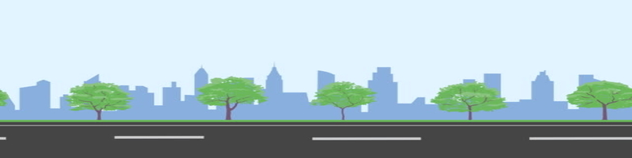

Frequency = 5 Hz
Source speed = 20 m/s
Ever wondered why the pitch of sirens passing by drops ? How radars and sonars work ? Or what that huge BOOM! you heard this morning right after you saw a fighter plane fly by was? Well, surprisingly enough, all of that can be explained by one single, simple, physics phenomenom: the Doppler effect! Let's see how it works. When a source (the car in the animation) emits a sound wave,